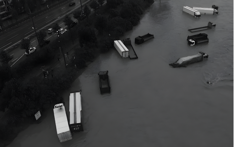

1번
다음 자료를 읽고 알맞지 않은 부분을 고르세요.
자연재해 조사 보고서
종류
1
홍수
의미
2
많은 비로 하천이 흘러넘쳐 주변 도로나 건물이 잠기는 자연재해
발생시기
3
주로 비가 많이 오는 봄철에 발생한다.
원인
짧은 시간에 내리는 집중 호우나 장기간 비가 오는 날씨
피해 사례

예방 및 대처 방법
4
댐이나 제방을 쌓거나 빗물을 가둬놓는 시설을 설치한다.
5
침수될 위험이 있는 저지대에서 높은 곳으로 신속히 대피한다.